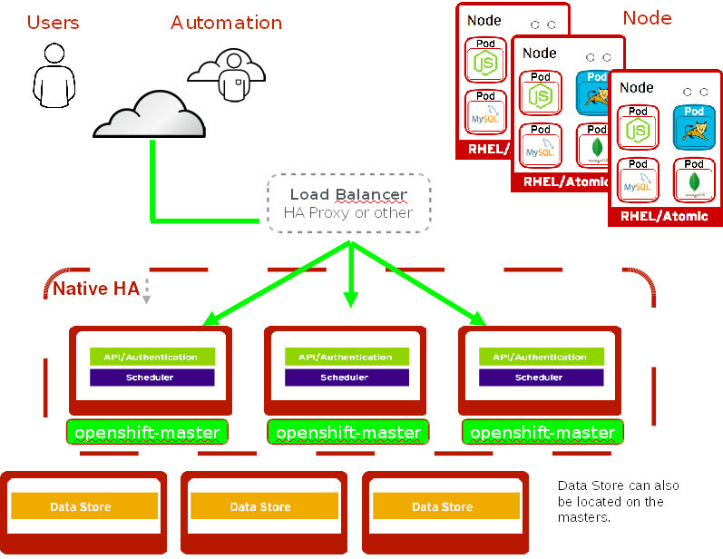
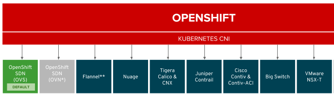
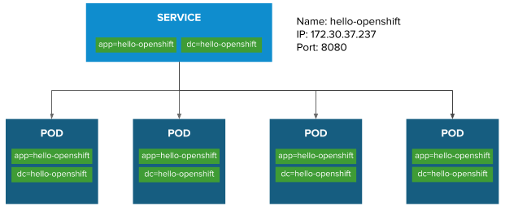

# for i in loadbalancer1 master1 master2 master3 infranode1 infranode2 node1 node2 node3 support1 ; do ssh ec2-user@$i.${GUID}.internal 'hostname' ; done
loadbalancer1.fc84.internal
master1.fc84.internal
master2.fc84.internal
master3.fc84.internal
infranode1.fc84.internal
infranode2.fc84.internal
node1.fc84.internal
node2.fc84.internal
node3.fc84.internal
support1.fc84.internalOPENSHIFT 高级部署
Table of Contents
高可用部署
高可用架构

-
负载均衡可以用任何负载均衡方案
-
多个 Master 节点，多个 etcd 节点，多个计算节点
环境准备
| 类型 | 主机名 |
|---|---|
Administration |
bastion.example.com |
Support (NFS) |
support1.example.com |
LoadBalancer |
loadbalancer.example.com |
Master |
master1.example.com |
Master |
master2.example.com |
Master |
master3.example.com |
Infrastructure |
infranode1.example.com |
Infrastructure |
infranode2.example.com |
Node |
node1.example.com |
Node |
node2.example.com |
Node |
node3.example.com |
IPA |
ipa.example.com |
1. 查看节点 hostname
2. 查看各节点的内存
# for i in loadbalancer1 master1 master2 master3 infranode1 infranode2 node1 node2 node3 support1 ; do ssh ec2-user@$i.${GUID}.internal 'hostname; cat /proc/meminfo | grep MemTotal' ; done
loadbalancer1.fc84.internal - MemTotal: 1882064 kB
master1.fc84. - MemTotal: 8009180 kB
master2.fc84. - MemTotal: 8009180 kB
master3.fc84. - MemTotal: 8009180 kB
infranode1.fc84. - MemTotal: 16266720 kB
infranode2.fc84. - MemTotal: 16266720 kB
node1.fc84. - MemTotal: 8009180 kB
node2.fc84. - MemTotal: 8009180 kB
node3.fc84. - MemTotal: 8009180 kB
support1.fc84. - MemTotal: 3880412 kB3. 查看各节点 CPU
# for i in loadbalancer1 master1 master2 master3 infranode1 infranode2 node1 node2 node3 support1 ; do ssh ec2-user@$i.${GUID}.internal 'hostname; grep -c ^processor /proc/cpuinfo' ; done
loadbalancer1.fc84. - 1
master1.fc84. - 2
master2.fc84. - 2
master3.fc84. - 2
infranode1.fc84. - 4
infranode2.fc84. - 4
node1.fc84. - 2
node2.fc84. - 2
node3.fc84. - 2
support1.fc84. - 24. 查看节点 IP 地址
# for i in loadbalancer1 master1 master2 master3 infranode1 infranode2 node1 node2 node3 support1 ; do host $i.${GUID}.internal ; done
loadbalancer1.fc84.internal has address 192.199.0.164
master1.fc84.internal has address 192.199.0.76
master2.fc84.internal has address 192.199.0.56
master3.fc84.internal has address 192.199.0.210
infranode1.fc84.internal has address 192.199.0.22
infranode2.fc84.internal has address 192.199.0.119
node1.fc84.internal has address 192.199.0.14
node2.fc84.internal has address 192.199.0.229
node3.fc84.internal has address 192.199.0.20
support1.fc84.internal has address 192.199.0.1175. Wildcard DNS 查询
# dig anyname.apps.${GUID}.example.opentlc.com +short
3.0.247.187
3.1.106.596. Master DNS 查询
# dig master{1,2,3}.${GUID}.internal +short
192.199.0.76
192.199.0.56
192.199.0.2107. node 和 infra DNS 查询
# dig {infra,}node{1,2,3}.${GUID}.internal +short
192.199.0.22
192.199.0.119
192.199.0.14
192.199.0.229
192.199.0.208. 查看 master, node yum 配置
# ansible masters,nodes -m shell -a"yum repolist"
[WARNING]: Consider using yum module rather than running yum
infranode1.fc84.internal | SUCCESS | rc=0 >>
Loaded plugins: amazon-id, rhui-lb, search-disabled-repos, versionlock
repo id repo name status
!rhel-7-fast-datapath-rpms Red Hat Enterprise Linux 7 Fast Datapath 16
!rhel-7-server-extras-rpms Red Hat Enterprise Linux 7 Extras 102
!rhel-7-server-optional-rpms Red Hat Enterprise Linux 7 Optional 4,848
!rhel-7-server-ose-3.7-rpms Red Hat Enterprise Linux 7 OSE 3.7 522
!rhel-7-server-rh-common-rpms Red Hat Enterprise Linux 7 Common 82
!rhel-7-server-rpms Red Hat Enterprise Linux 7 5,163
repolist: 10,733
master1.fc84.internal | SUCCESS | rc=0 >>
Loaded plugins: amazon-id, rhui-lb, search-disabled-repos, versionlock
repo id repo name status
!rhel-7-fast-datapath-rpms Red Hat Enterprise Linux 7 Fast Datapath 16
!rhel-7-server-extras-rpms Red Hat Enterprise Linux 7 Extras 102
!rhel-7-server-optional-rpms Red Hat Enterprise Linux 7 Optional 4,848
!rhel-7-server-ose-3.7-rpms Red Hat Enterprise Linux 7 OSE 3.7 522
!rhel-7-server-rh-common-rpms Red Hat Enterprise Linux 7 Common 82
!rhel-7-server-rpms Red Hat Enterprise Linux 7 5,163
repolist: 10,733
master2.fc84.internal | SUCCESS | rc=0 >>
Loaded plugins: amazon-id, rhui-lb, search-disabled-repos, versionlock
repo id repo name status
!rhel-7-fast-datapath-rpms Red Hat Enterprise Linux 7 Fast Datapath 16
!rhel-7-server-extras-rpms Red Hat Enterprise Linux 7 Extras 102
!rhel-7-server-optional-rpms Red Hat Enterprise Linux 7 Optional 4,848
!rhel-7-server-ose-3.7-rpms Red Hat Enterprise Linux 7 OSE 3.7 522
!rhel-7-server-rh-common-rpms Red Hat Enterprise Linux 7 Common 82
!rhel-7-server-rpms Red Hat Enterprise Linux 7 5,163
repolist: 10,733
infranode2.fc84.internal | SUCCESS | rc=0 >>
Loaded plugins: amazon-id, rhui-lb, search-disabled-repos, versionlock
repo id repo name status
!rhel-7-fast-datapath-rpms Red Hat Enterprise Linux 7 Fast Datapath 16
!rhel-7-server-extras-rpms Red Hat Enterprise Linux 7 Extras 102
!rhel-7-server-optional-rpms Red Hat Enterprise Linux 7 Optional 4,848
!rhel-7-server-ose-3.7-rpms Red Hat Enterprise Linux 7 OSE 3.7 522
!rhel-7-server-rh-common-rpms Red Hat Enterprise Linux 7 Common 82
!rhel-7-server-rpms Red Hat Enterprise Linux 7 5,163
repolist: 10,733
master3.fc84.internal | SUCCESS | rc=0 >>
Loaded plugins: amazon-id, rhui-lb, search-disabled-repos, versionlock
repo id repo name status
!rhel-7-fast-datapath-rpms Red Hat Enterprise Linux 7 Fast Datapath 16
!rhel-7-server-extras-rpms Red Hat Enterprise Linux 7 Extras 102
!rhel-7-server-optional-rpms Red Hat Enterprise Linux 7 Optional 4,848
!rhel-7-server-ose-3.7-rpms Red Hat Enterprise Linux 7 OSE 3.7 522
!rhel-7-server-rh-common-rpms Red Hat Enterprise Linux 7 Common 82
!rhel-7-server-rpms Red Hat Enterprise Linux 7 5,163
repolist: 10,733
node1.fc84.internal | SUCCESS | rc=0 >>
Loaded plugins: amazon-id, rhui-lb, search-disabled-repos, versionlock
repo id repo name status
!rhel-7-fast-datapath-rpms Red Hat Enterprise Linux 7 Fast Datapath 16
!rhel-7-server-extras-rpms Red Hat Enterprise Linux 7 Extras 102
!rhel-7-server-optional-rpms Red Hat Enterprise Linux 7 Optional 4,848
!rhel-7-server-ose-3.7-rpms Red Hat Enterprise Linux 7 OSE 3.7 522
!rhel-7-server-rh-common-rpms Red Hat Enterprise Linux 7 Common 82
!rhel-7-server-rpms Red Hat Enterprise Linux 7 5,163
repolist: 10,733
node3.fc84.internal | SUCCESS | rc=0 >>
Loaded plugins: amazon-id, rhui-lb, search-disabled-repos, versionlock
repo id repo name status
!rhel-7-fast-datapath-rpms Red Hat Enterprise Linux 7 Fast Datapath 16
!rhel-7-server-extras-rpms Red Hat Enterprise Linux 7 Extras 102
!rhel-7-server-optional-rpms Red Hat Enterprise Linux 7 Optional 4,848
!rhel-7-server-ose-3.7-rpms Red Hat Enterprise Linux 7 OSE 3.7 522
!rhel-7-server-rh-common-rpms Red Hat Enterprise Linux 7 Common 82
!rhel-7-server-rpms Red Hat Enterprise Linux 7 5,163
repolist: 10,733
node2.fc84.internal | SUCCESS | rc=0 >>
Loaded plugins: amazon-id, rhui-lb, search-disabled-repos, versionlock
repo id repo name status
!rhel-7-fast-datapath-rpms Red Hat Enterprise Linux 7 Fast Datapath 16
!rhel-7-server-extras-rpms Red Hat Enterprise Linux 7 Extras 102
!rhel-7-server-optional-rpms Red Hat Enterprise Linux 7 Optional 4,848
!rhel-7-server-ose-3.7-rpms Red Hat Enterprise Linux 7 OSE 3.7 522
!rhel-7-server-rh-common-rpms Red Hat Enterprise Linux 7 Common 82
!rhel-7-server-rpms Red Hat Enterprise Linux 7 5,163
repolist: 10,7339. 查看 NFS 共享卷
# ansible nfs -m shell -a "exportfs"
support1.fc84.internal | SUCCESS | rc=0 >>
/srv/nfs <world>10. 查看节点 docker 状态
# ansible nodes -m shell -a "systemctl is-active docker"
master1.fc84.internal | SUCCESS | rc=0 >>
active
master2.fc84.internal | SUCCESS | rc=0 >>
active
master3.fc84.internal | SUCCESS | rc=0 >>
active
infranode1.fc84.internal | SUCCESS | rc=0 >>
active
infranode2.fc84.internal | SUCCESS | rc=0 >>
active
node1.fc84.internal | SUCCESS | rc=0 >>
active
node3.fc84.internal | SUCCESS | rc=0 >>
active
node2.fc84.internal | SUCCESS | rc=0 >>
active11. 查看节点 docker 是否 enable
# ansible nodes -m shell -a "systemctl is-enabled docker"
master3.fc84.internal | SUCCESS | rc=0 >>
enabled
infranode2.fc84.internal | SUCCESS | rc=0 >>
enabled
master2.fc84.internal | SUCCESS | rc=0 >>
enabled
infranode1.fc84.internal | SUCCESS | rc=0 >>
enabled
master1.fc84.internal | SUCCESS | rc=0 >>
enabled
node1.fc84.internal | SUCCESS | rc=0 >>
enabled
node2.fc84.internal | SUCCESS | rc=0 >>
enabled
node3.fc84.internal | SUCCESS | rc=0 >>
enabled安装
拷贝 hosts-3.10.45 内容到管理节点 bastion 的 /etc/ansible/hosts 文件。
前需安装验证
# ansible-playbook /usr/share/ansible/openshift-ansible/playbooks/prerequisites.yml安装
# ansible-playbook /usr/share/ansible/openshift-ansible/playbooks/deploy_cluster.yml卸载
|
Note
|
本部分只有在需要卸载 OpenShift 环境时使用 |
卸载
# ansible-playbook /usr/share/ansible/openshift-ansible/playbooks/adhoc/uninstall.yml
# ansible nodes -a "rm -rf /etc/origin"
# ansible nfs -a "rm -rf /srv/nfs/*"高可用安装验证
输出当前用户
# oc whoami
system:admin输出所有节点
# oc get nodes
NAME STATUS ROLES AGE VERSION
infranode1.f062.internal Ready infra 10m v1.10.0+b81c8f8
infranode2.f062.internal Ready infra 10m v1.10.0+b81c8f8
master1.f062.internal Ready master 13m v1.10.0+b81c8f8
master2.f062.internal Ready master 13m v1.10.0+b81c8f8
master3.f062.internal Ready master 13m v1.10.0+b81c8f8
node1.f062.internal Ready compute 10m v1.10.0+b81c8f8
node2.f062.internal Ready compute 10m v1.10.0+b81c8f8
node3.f062.internal Ready compute 10m v1.10.0+b81c8f8输出所有 Pod
# oc get pod --all-namespaces -o wide | wc -l
76
# oc get pod --all-namespaces -o wide
NAMESPACE NAME READY STATUS RESTARTS AGE IP NODE
default docker-registry-1-qgnst 1/1 Running 0 10m 10.130.2.2 infranode1.f062.internal
default registry-console-1-bdjl2 1/1 Running 0 10m 10.130.0.2 master1.f062.internal
default router-1-67g5t 1/1 Running 0 10m 192.199.0.40 infranode1.f062.internal
default router-1-s7vql 1/1 Running 0 10m 192.199.0.138 infranode2.f062.internal
kube-service-catalog apiserver-8cqtd 1/1 Running 0 3m 10.128.0.6 master3.f062.internal
kube-service-catalog apiserver-gr6nn 1/1 Running 0 3m 10.130.0.5 master1.f062.internal
kube-service-catalog apiserver-jmk9b 1/1 Running 0 3m 10.129.0.7 master2.f062.internal
kube-service-catalog controller-manager-ql84k 1/1 Running 0 3m 10.129.0.8 master2.f062.internal
kube-service-catalog controller-manager-qrfk6 1/1 Running 0 3m 10.128.0.7 master3.f062.internal
kube-service-catalog controller-manager-rftnl 1/1 Running 0 3m 10.130.0.6 master1.f062.internal
kube-system master-api-master1.f062.internal 1/1 Running 0 13m 192.199.0.189 master1.f062.internal
kube-system master-api-master2.f062.internal 1/1 Running 0 13m 192.199.0.105 master2.f062.internal
kube-system master-api-master3.f062.internal 1/1 Running 0 13m 192.199.0.220 master3.f062.internal
kube-system master-controllers-master1.f062.internal 1/1 Running 0 13m 192.199.0.189 master1.f062.internal
kube-system master-controllers-master2.f062.internal 1/1 Running 0 13m 192.199.0.105 master2.f062.internal
kube-system master-controllers-master3.f062.internal 1/1 Running 0 13m 192.199.0.220 master3.f062.internal
kube-system master-etcd-master1.f062.internal 1/1 Running 0 13m 192.199.0.189 master1.f062.internal
kube-system master-etcd-master2.f062.internal 1/1 Running 0 13m 192.199.0.105 master2.f062.internal
kube-system master-etcd-master3.f062.internal 1/1 Running 0 13m 192.199.0.220 master3.f062.internal
openshift-ansible-service-broker asb-1-fjkxx 1/1 Running 0 3m 10.130.2.6 infranode1.f062.internal
openshift-infra hawkular-cassandra-1-v7svv 1/1 Running 0 7m 10.128.0.3 master3.f062.internal
openshift-infra hawkular-metrics-jt5b9 1/1 Running 0 7m 10.129.2.5 infranode2.f062.internal
openshift-infra hawkular-metrics-schema-mt775 0/1 Completed 0 8m 10.129.2.4 infranode2.f062.internal
openshift-infra heapster-ww5lr 1/1 Running 0 7m 10.129.0.5 master2.f062.internal
openshift-logging logging-curator-1-rk98c 1/1 Running 0 5m 10.128.2.2 node2.f062.internal
openshift-logging logging-es-data-master-1ptuekvq-1-deploy 1/1 Running 0 5m 10.128.0.5 master3.f062.internal
openshift-logging logging-es-data-master-1ptuekvq-1-dns66 0/2 Pending 0 4m <none> <none>
openshift-logging logging-fluentd-2b7mv 1/1 Running 0 5m 10.128.2.3 node2.f062.internal
openshift-logging logging-fluentd-2pd82 1/1 Running 0 5m 10.130.2.5 infranode1.f062.internal
openshift-logging logging-fluentd-bsbjj 1/1 Running 0 5m 10.130.0.4 master1.f062.internal
openshift-logging logging-fluentd-cg9rs 1/1 Running 0 5m 10.131.2.3 node3.f062.internal
openshift-logging logging-fluentd-cqpt6 1/1 Running 0 5m 10.128.0.4 master3.f062.internal
openshift-logging logging-fluentd-qjwkr 1/1 Running 0 5m 10.129.0.6 master2.f062.internal
openshift-logging logging-fluentd-rwhd6 1/1 Running 0 5m 10.129.2.6 infranode2.f062.internal
openshift-logging logging-fluentd-sq5b6 1/1 Running 0 5m 10.131.0.3 node1.f062.internal
openshift-logging logging-kibana-1-f79lb 2/2 Running 0 5m 10.130.2.4 infranode1.f062.internal
openshift-metrics prometheus-0 0/6 Pending 0 4m <none> <none>
openshift-metrics prometheus-node-exporter-98n9k 1/1 Running 0 4m 192.199.0.40 infranode1.f062.internal
openshift-metrics prometheus-node-exporter-9kgqf 1/1 Running 0 4m 192.199.0.220 master3.f062.internal
openshift-metrics prometheus-node-exporter-9vpjc 1/1 Running 0 4m 192.199.0.105 master2.f062.internal
openshift-metrics prometheus-node-exporter-crcwq 1/1 Running 0 4m 192.199.0.189 master1.f062.internal
openshift-metrics prometheus-node-exporter-h49rr 1/1 Running 0 4m 192.199.0.138 infranode2.f062.internal
openshift-metrics prometheus-node-exporter-tftwh 1/1 Running 0 4m 192.199.0.61 node2.f062.internal
openshift-metrics prometheus-node-exporter-zhrbg 1/1 Running 0 4m 192.199.0.77 node1.f062.internal
openshift-metrics prometheus-node-exporter-zqltm 1/1 Running 0 4m 192.199.0.94 node3.f062.internal
openshift-node sync-8vn8q 1/1 Running 0 12m 192.199.0.105 master2.f062.internal
openshift-node sync-frgls 1/1 Running 0 11m 192.199.0.40 infranode1.f062.internal
openshift-node sync-hldpx 1/1 Running 0 11m 192.199.0.138 infranode2.f062.internal
openshift-node sync-jgn6j 1/1 Running 0 11m 192.199.0.61 node2.f062.internal
openshift-node sync-mp2dn 1/1 Running 0 11m 192.199.0.94 node3.f062.internal
openshift-node sync-nbr9q 1/1 Running 0 12m 192.199.0.189 master1.f062.internal
openshift-node sync-xxjsl 1/1 Running 0 12m 192.199.0.220 master3.f062.internal
openshift-node sync-zfnkm 1/1 Running 0 11m 192.199.0.77 node1.f062.internal
openshift-sdn ovs-6mkxk 1/1 Running 0 11m 192.199.0.77 node1.f062.internal
openshift-sdn ovs-74k8m 1/1 Running 0 12m 192.199.0.105 master2.f062.internal
openshift-sdn ovs-8rm52 1/1 Running 0 11m 192.199.0.40 infranode1.f062.internal
openshift-sdn ovs-hcp2r 1/1 Running 0 12m 192.199.0.189 master1.f062.internal
openshift-sdn ovs-qhrcj 1/1 Running 0 11m 192.199.0.138 infranode2.f062.internal
openshift-sdn ovs-sx4t7 1/1 Running 0 12m 192.199.0.220 master3.f062.internal
openshift-sdn ovs-zgsxg 1/1 Running 0 11m 192.199.0.61 node2.f062.internal
openshift-sdn ovs-zh9ln 1/1 Running 0 11m 192.199.0.94 node3.f062.internal
openshift-sdn sdn-4c58q 1/1 Running 0 12m 192.199.0.220 master3.f062.internal
openshift-sdn sdn-68kgk 1/1 Running 0 12m 192.199.0.105 master2.f062.internal
openshift-sdn sdn-7vh5l 1/1 Running 0 11m 192.199.0.77 node1.f062.internal
openshift-sdn sdn-grr8g 1/1 Running 0 11m 192.199.0.61 node2.f062.internal
openshift-sdn sdn-pv47r 1/1 Running 0 11m 192.199.0.138 infranode2.f062.internal
openshift-sdn sdn-tdbg7 1/1 Running 0 11m 192.199.0.40 infranode1.f062.internal
openshift-sdn sdn-vprhs 1/1 Running 0 11m 192.199.0.94 node3.f062.internal
openshift-sdn sdn-xd6ks 1/1 Running 0 12m 192.199.0.189 master1.f062.internal
openshift-template-service-broker apiserver-8ffkw 1/1 Running 0 3m 10.128.0.8 master3.f062.internal
openshift-template-service-broker apiserver-kcqdt 1/1 Running 0 3m 10.130.0.7 master1.f062.internal
openshift-template-service-broker apiserver-s4x9n 1/1 Running 0 3m 10.129.0.9 master2.f062.internal
openshift-web-console webconsole-7f944b7c85-5xmtr 1/1 Running 2 10m 10.130.0.3 master1.f062.internal
openshift-web-console webconsole-7f944b7c85-89qxf 1/1 Running 2 10m 10.129.0.3 master2.f062.internal
openshift-web-console webconsole-7f944b7c85-h8c5n 1/1 Running 2 10m 10.128.0.2 master3.f062.internal创建 PV
1. 创建 pv.sh
cat << EOF > pv.sh
#!/usr/bin/sh
mkdir -p /srv/nfs/user-vols/pv{1..200}
for pvnum in {1..50} ; do
echo "/srv/nfs/user-vols/pv${pvnum} *(rw,root_squash)" >> /etc/exports.d/openshift-uservols.exports
chown -R nfsnobody.nfsnobody /srv/nfs
chmod -R 777 /srv/nfs
done
systemctl restart nfs-server
EOF2. 拷贝 pv.sh 到 NFS 服务器
# ansible support1.f062.internal -m copy -a 'src=./pv.sh dest=~/pv.sh owner=root group=root mode=0744'3. 在 NFS 服务器上执行 pv.sh
# ansible support1.f062.internal -m shell -a '~/pv.sh'4. 创建 pvs.sh，内容如下
#!/usr/bin/sh
export GUID=`hostname|awk -F. '{print $2}'`
export volsize="5Gi"
mkdir /root/pvs
for volume in pv{1..25} ; do
cat << EOF > /root/pvs/${volume}
{
"apiVersion": "v1",
"kind": "PersistentVolume",
"metadata": {
"name": "${volume}"
},
"spec": {
"capacity": {
"storage": "${volsize}"
},
"accessModes": [ "ReadWriteOnce" ],
"nfs": {
"path": "/srv/nfs/user-vols/${volume}",
"server": "support1.${GUID}.internal"
},
"persistentVolumeReclaimPolicy": "Recycle"
}
}
EOF
echo "Created def file for ${volume}";
done;
# 10Gi
export volsize="10Gi"
for volume in pv{26..50} ; do
cat << EOF > /root/pvs/${volume}
{
"apiVersion": "v1",
"kind": "PersistentVolume",
"metadata": {
"name": "${volume}"
},
"spec": {
"capacity": {
"storage": "${volsize}"
},
"accessModes": [ "ReadWriteMany" ],
"nfs": {
"path": "/srv/nfs/user-vols/${volume}",
"server": "support1.${GUID}.internal"
},
"persistentVolumeReclaimPolicy": "Retain"
}
}
EOF
echo "Created def file for ${volume}";
done;5. 执行 pvs.sh 创建 PV
# chmod +x pvs.sh && ./pvs.sh
# cat /root/pvs/* | oc create -f -6. 查看 ReadWriteOnce PV 配置
# cat /root/pvs/pv1
{
"apiVersion": "v1",
"kind": "PersistentVolume",
"metadata": {
"name": "pv1"
},
"spec": {
"capacity": {
"storage": "5Gi"
},
"accessModes": [ "ReadWriteOnce" ],
"nfs": {
"path": "/srv/nfs/user-vols/pv1",
"server": "support1.f062.internal"
},
"persistentVolumeReclaimPolicy": "Recycle"
}
}7. 查看 ReadWriteMany PV 配置
# cat /root/pvs/pv28
{
"apiVersion": "v1",
"kind": "PersistentVolume",
"metadata": {
"name": "pv28"
},
"spec": {
"capacity": {
"storage": "10Gi"
},
"accessModes": [ "ReadWriteMany" ],
"nfs": {
"path": "/srv/nfs/user-vols/pv28",
"server": "support1.f062.internal"
},
"persistentVolumeReclaimPolicy": "Retain"
}
}冒烟测试
本部分测试 OpenShift 高级部署环境，确保集群运行正常，PV 可以正常工作，镜像可以 S2I 生成并推送到镜像仓库，应用可以正常运行，路由可以路由外部请求。
使用 nodejs-mongo-persistent 模版可以创建一个应用，使用 MongoDB 保存数据且需要挂载存储。
1. 创建一个新工程
# oc new-project smoke-test2. 创建 nodejs 应用
# oc new-app nodejs-mongo-persistent3. 查看 PV 挂载情况
# oc get pv | grep mongodb
pv1 5Gi RWO Recycle Bound smoke-test/mongodb 15m4. 查看路由
# oc get routes
NAME HOST/PORT PATH SERVICES PORT TERMINATION WILDCARD
nodejs-mongo-persistent nodejs-mongo-persistent-smoke-test.apps.f062.example.opentlc.com nodejs-mongo-persistent <all> None5. 外部访问服务测试
$ curl http://nodejs-mongo-persistent-smoke-test.apps.f062.example.opentlc.com|
Note
|
打开浏览器，访问 http://nodejs-mongo-persistent-smoke-test.apps.f062.example.opentlc.com 可以测试应用。 |
6. 删除测试工程
$ oc delete project smoke-test网络
为什么需要网络
为什么 OpenShift/Kubernetes 需要网络？应为默认 Docker 采用虚拟桥接设备，一个主机上的所有容器都连接到虚拟桥接设备，一个主机上面的所有容器之间可以通信，但不同主机上容器不能直接通信，不同主机上的容器通信需要端口映射等配置，所以为了方便不同主机上的容器通信，Kubernetes 引入网络的概念，OpenShift/Kubernetes 的网络是为了灵活控制不同主机上容器之间的通信。网络也称软件定义网络，Software-Defined Networking (SDN)。
Container Network Interface(CNI) 接口定义了配置网络接口的描述和标准，

OpenShift 提供一系列实现了 CNI 的网络网络插件，OpenShift OVS 为默认插件，OVS 又有三种模式：ovs-subnet，ovs-multitenant，ovs-networkpolicy，安装过程中可通过如下 Ansible 变量进行配置
os_sdn_network_plugin_name='redhat/openshift-ovs-subnet'
os_sdn_network_plugin_name='redhat/openshift-ovs-multitenant'
os_sdn_network_plugin_name='redhat/openshift-ovs-networkpolicy'| 名称 | 是否默认 | 说明 |
|---|---|---|
ovs-subnet |
是 |
定义了一个扁平的网络，任意一个 Pod 可以通任意 Pod 或 Service 通信 |
ovs-multitenant |
否 |
定义了一层抽象网络隔离，一个 Project 中处于一个虚拟网络中，且有唯一的 VNID，不同 Project 中的 Pod 不能和其它 Project 中的 Pod 或 Service 通信。 |
ovs-networkpolicy |
否 |
允许通过 NetworkPolicy 对象定义自己的网络隔离策略 |
内置服务发现和内部负载均衡
OpenShift/Kubernetes 在网络应用层提出 Service 的概念是一个非常好的设计（相比较传统中间件架构），一个 Service 包括一组运行的容器，或是位于一组容器之上的一个抽象，而 Service 的最重要的两个标准化特性是：
-
内部负载均衡(internal load-balancing)
-
内置服务发现 - Service 会定义一个
Selector: app=hello-openshift,deploymentconfig=hello-openshift，当应用容器中的标签(Labels)能和 Service 的Selector匹配时，内置服务发现起作用，将应用容器添加到服务

容器化应用通常以 Pod 封装，Service 和 Pod 除了 Name, Namespace, Selector, Labels 等属性外，还有以下重要属性：
-
IP -
Port -
Endpoints -
Session Affinity
本部分围绕以上 Service 和 Pod 的属性去说明 OpenShift 网络应用层的内置服务发现和内部负载均衡。
I - 创建测试工程
1. 创建工程并部署应用
# oc new-project servicelayer
# oc new-app openshift/hello-openshift:v1.1.1.12. 扩展
hello-openshift 为 4 个运行实例# oc scale dc/hello-openshift --replicas=4
deploymentconfig.apps.openshift.io "hello-openshift" scaled3. 查看 4 个实例正常运行
# oc get pods -o wide
NAME READY STATUS RESTARTS AGE IP NODE
hello-openshift-1-46q9h 1/1 Running 0 2m 10.128.2.11 node2.f062.internal
hello-openshift-1-5kptl 1/1 Running 0 56s 10.128.2.12 node2.f062.internal
hello-openshift-1-jqvhj 1/1 Running 0 56s 10.131.0.12 node1.f062.internal
hello-openshift-1-nk8w6 1/1 Running 0 56s 10.131.2.12 node3.f062.internalII - Round-Robin
OpenShift 中默认创建的服务负载均衡策略是 Round-Robin。
1. 查看服务明细
# oc describe svc hello-openshift
Name: hello-openshift
Namespace: servicelayer
Labels: app=hello-openshift
Annotations: openshift.io/generated-by=OpenShiftNewApp
Selector: app=hello-openshift,deploymentconfig=hello-openshift
Type: ClusterIP
IP: 172.30.37.237
Port: 8080-tcp 8080/TCP
TargetPort: 8080/TCP
Endpoints: 10.128.2.11:8080,10.128.2.12:8080,10.131.0.12:8080 + 1 more...
Port: 8888-tcp 8888/TCP
TargetPort: 8888/TCP
Endpoints: 10.128.2.11:8888,10.128.2.12:8888,10.131.0.12:8888 + 1 more...
Session Affinity: None
Events: <none>|
Note
|
hello-openshift 的 IP 为 172.30.37.237，Type 为 ClusterIP，Session Affinity 为 None。
|
2.
ssh 到 master1# ssh master1.f062.internal
$ sudo -i
# oc project servicelayer3. 查看 hello-openshift 服务 8080 端口 iptables 规则
# iptables-save | grep servicelayer/hello-openshift | grep 8080
-A KUBE-SEP-5ALW7DB4ASV2H75B -s 10.128.2.11/32 -m comment --comment "servicelayer/hello-openshift:8080-tcp" -j KUBE-MARK-MASQ
-A KUBE-SEP-5ALW7DB4ASV2H75B -p tcp -m comment --comment "servicelayer/hello-openshift:8080-tcp" -m tcp -j DNAT --to-destination 10.128.2.11:8080
-A KUBE-SEP-7JAYOUKDEDIW6LF6 -s 10.131.0.12/32 -m comment --comment "servicelayer/hello-openshift:8080-tcp" -j KUBE-MARK-MASQ
-A KUBE-SEP-7JAYOUKDEDIW6LF6 -p tcp -m comment --comment "servicelayer/hello-openshift:8080-tcp" -m tcp -j DNAT --to-destination 10.131.0.12:8080
-A KUBE-SEP-SCPXWX5WPAPOOM2W -s 10.131.2.12/32 -m comment --comment "servicelayer/hello-openshift:8080-tcp" -j KUBE-MARK-MASQ
-A KUBE-SEP-SCPXWX5WPAPOOM2W -p tcp -m comment --comment "servicelayer/hello-openshift:8080-tcp" -m tcp -j DNAT --to-destination 10.131.2.12:8080
-A KUBE-SEP-TSDFXFOXWPPSIHKV -s 10.128.2.12/32 -m comment --comment "servicelayer/hello-openshift:8080-tcp" -j KUBE-MARK-MASQ
-A KUBE-SEP-TSDFXFOXWPPSIHKV -p tcp -m comment --comment "servicelayer/hello-openshift:8080-tcp" -m tcp -j DNAT --to-destination 10.128.2.12:8080
-A KUBE-SERVICES -d 172.30.37.237/32 -p tcp -m comment --comment "servicelayer/hello-openshift:8080-tcp cluster IP" -m tcp --dport 8080 -j KUBE-SVC-BXIL3WE3EN2EVZ7N
-A KUBE-SVC-BXIL3WE3EN2EVZ7N -m comment --comment "servicelayer/hello-openshift:8080-tcp" -m statistic --mode random --probability 0.25000000000 -j KUBE-SEP-5ALW7DB4ASV2H75B
-A KUBE-SVC-BXIL3WE3EN2EVZ7N -m comment --comment "servicelayer/hello-openshift:8080-tcp" -m statistic --mode random --probability 0.33332999982 -j KUBE-SEP-TSDFXFOXWPPSIHKV
-A KUBE-SVC-BXIL3WE3EN2EVZ7N -m comment --comment "servicelayer/hello-openshift:8080-tcp" -m statistic --mode random --probability 0.50000000000 -j KUBE-SEP-7JAYOUKDEDIW6LF6
-A KUBE-SVC-BXIL3WE3EN2EVZ7N -m comment --comment "servicelayer/hello-openshift:8080-tcp" -j KUBE-SEP-SCPXWX5WPAPOOM2W4. hello-openshift 服务路径是一个目的地匹配规则，跳转到另一个 iptables 规则
KUBE-SVC-BXIL3WE3EN2EVZ7N-A KUBE-SERVICES -d 172.30.37.237/32 -p tcp -m comment --comment "servicelayer/hello-openshift:8080-tcp cluster IP" -m tcp --dport 8080 -j KUBE-SVC-BXIL3WE3EN2EVZ7N5. 有四个
KUBE-SVC-BXIL3WE3EN2EVZ7N 规则，通过随机的方式进行挑转-A KUBE-SVC-BXIL3WE3EN2EVZ7N -m comment --comment "servicelayer/hello-openshift:8080-tcp" -m statistic --mode random --probability 0.25000000000 -j KUBE-SEP-5ALW7DB4ASV2H75B
-A KUBE-SVC-BXIL3WE3EN2EVZ7N -m comment --comment "servicelayer/hello-openshift:8080-tcp" -m statistic --mode random --probability 0.33332999982 -j KUBE-SEP-TSDFXFOXWPPSIHKV
-A KUBE-SVC-BXIL3WE3EN2EVZ7N -m comment --comment "servicelayer/hello-openshift:8080-tcp" -m statistic --mode random --probability 0.50000000000 -j KUBE-SEP-7JAYOUKDEDIW6LF6
-A KUBE-SVC-BXIL3WE3EN2EVZ7N -m comment --comment "servicelayer/hello-openshift:8080-tcp" -j KUBE-SEP-SCPXWX5WPAPOOM2W6. 寻找
KUBE-SEP-5ALW7DB4ASV2H75B 下一跳，规则链中 DNAT 将请求转向相关 Pod-A KUBE-SEP-5ALW7DB4ASV2H75B -s 10.128.2.11/32 -m comment --comment "servicelayer/hello-openshift:8080-tcp" -j KUBE-MARK-MASQ
-A KUBE-SEP-5ALW7DB4ASV2H75B -p tcp -m comment --comment "servicelayer/hello-openshift:8080-tcp" -m tcp -j DNAT --to-destination 10.128.2.11:8080III - Session Affinity
1. 编辑
hello-openshift 服务# oc edit svc hello-openshift2. 修改 sessionAffinity 为
ClientIPsessionAffinity: ClientIP3. 查看服务明细
# oc describe svc hello-openshift
Name: hello-openshift
Namespace: servicelayer
Labels: app=hello-openshift
Annotations: openshift.io/generated-by=OpenShiftNewApp
Selector: app=hello-openshift,deploymentconfig=hello-openshift
Type: ClusterIP
IP: 172.30.37.237
Port: 8080-tcp 8080/TCP
TargetPort: 8080/TCP
Endpoints: 10.128.2.11:8080,10.128.2.12:8080,10.131.0.12:8080 + 1 more...
Port: 8888-tcp 8888/TCP
TargetPort: 8888/TCP
Endpoints: 10.128.2.11:8888,10.128.2.12:8888,10.131.0.12:8888 + 1 more...
Session Affinity: ClientIP
Events: <none>4. 查看 hello-openshift 服务 8080 端口 iptables 规则
# iptables-save | grep servicelayer/hello-openshift | grep 8080
-A KUBE-SEP-5ALW7DB4ASV2H75B -s 10.128.2.11/32 -m comment --comment "servicelayer/hello-openshift:8080-tcp" -j KUBE-MARK-MASQ
-A KUBE-SEP-5ALW7DB4ASV2H75B -p tcp -m comment --comment "servicelayer/hello-openshift:8080-tcp" -m recent --set --name KUBE-SEP-5ALW7DB4ASV2H75B --mask 255.255.255.255 --rsource -m tcp -j DNAT --to-destination 10.128.2.11:8080
-A KUBE-SEP-7JAYOUKDEDIW6LF6 -s 10.131.0.12/32 -m comment --comment "servicelayer/hello-openshift:8080-tcp" -j KUBE-MARK-MASQ
-A KUBE-SEP-7JAYOUKDEDIW6LF6 -p tcp -m comment --comment "servicelayer/hello-openshift:8080-tcp" -m recent --set --name KUBE-SEP-7JAYOUKDEDIW6LF6 --mask 255.255.255.255 --rsource -m tcp -j DNAT --to-destination 10.131.0.12:8080
-A KUBE-SEP-SCPXWX5WPAPOOM2W -s 10.131.2.12/32 -m comment --comment "servicelayer/hello-openshift:8080-tcp" -j KUBE-MARK-MASQ
-A KUBE-SEP-SCPXWX5WPAPOOM2W -p tcp -m comment --comment "servicelayer/hello-openshift:8080-tcp" -m recent --set --name KUBE-SEP-SCPXWX5WPAPOOM2W --mask 255.255.255.255 --rsource -m tcp -j DNAT --to-destination 10.131.2.12:8080
-A KUBE-SEP-TSDFXFOXWPPSIHKV -s 10.128.2.12/32 -m comment --comment "servicelayer/hello-openshift:8080-tcp" -j KUBE-MARK-MASQ
-A KUBE-SEP-TSDFXFOXWPPSIHKV -p tcp -m comment --comment "servicelayer/hello-openshift:8080-tcp" -m recent --set --name KUBE-SEP-TSDFXFOXWPPSIHKV --mask 255.255.255.255 --rsource -m tcp -j DNAT --to-destination 10.128.2.12:8080
-A KUBE-SERVICES -d 172.30.37.237/32 -p tcp -m comment --comment "servicelayer/hello-openshift:8080-tcp cluster IP" -m tcp --dport 8080 -j KUBE-SVC-BXIL3WE3EN2EVZ7N
-A KUBE-SVC-BXIL3WE3EN2EVZ7N -m comment --comment "servicelayer/hello-openshift:8080-tcp" -m recent --rcheck --seconds 10800 --reap --name KUBE-SEP-5ALW7DB4ASV2H75B --mask 255.255.255.255 --rsource -j KUBE-SEP-5ALW7DB4ASV2H75B
-A KUBE-SVC-BXIL3WE3EN2EVZ7N -m comment --comment "servicelayer/hello-openshift:8080-tcp" -m recent --rcheck --seconds 10800 --reap --name KUBE-SEP-TSDFXFOXWPPSIHKV --mask 255.255.255.255 --rsource -j KUBE-SEP-TSDFXFOXWPPSIHKV
-A KUBE-SVC-BXIL3WE3EN2EVZ7N -m comment --comment "servicelayer/hello-openshift:8080-tcp" -m recent --rcheck --seconds 10800 --reap --name KUBE-SEP-7JAYOUKDEDIW6LF6 --mask 255.255.255.255 --rsource -j KUBE-SEP-7JAYOUKDEDIW6LF6
-A KUBE-SVC-BXIL3WE3EN2EVZ7N -m comment --comment "servicelayer/hello-openshift:8080-tcp" -m recent --rcheck --seconds 10800 --reap --name KUBE-SEP-SCPXWX5WPAPOOM2W --mask 255.255.255.255 --rsource -j KUBE-SEP-SCPXWX5WPAPOOM2W
-A KUBE-SVC-BXIL3WE3EN2EVZ7N -m comment --comment "servicelayer/hello-openshift:8080-tcp" -m statistic --mode random --probability 0.25000000000 -j KUBE-SEP-5ALW7DB4ASV2H75B
-A KUBE-SVC-BXIL3WE3EN2EVZ7N -m comment --comment "servicelayer/hello-openshift:8080-tcp" -m statistic --mode random --probability 0.33332999982 -j KUBE-SEP-TSDFXFOXWPPSIHKV
-A KUBE-SVC-BXIL3WE3EN2EVZ7N -m comment --comment "servicelayer/hello-openshift:8080-tcp" -m statistic --mode random --probability 0.50000000000 -j KUBE-SEP-7JAYOUKDEDIW6LF6
-A KUBE-SVC-BXIL3WE3EN2EVZ7N -m comment --comment "servicelayer/hello-openshift:8080-tcp" -j KUBE-SEP-SCPXWX5WPAPOOM2W5. 查看第一跳 SVC 的规则
-A KUBE-SERVICES -d 172.30.37.237/32 -p tcp -m comment --comment "servicelayer/hello-openshift:8080-tcp cluster IP" -m tcp --dport 8080 -j KUBE-SVC-BXIL3WE3EN2EVZ7N6. 查看第二跳规则链
-A KUBE-SVC-BXIL3WE3EN2EVZ7N -m comment --comment "servicelayer/hello-openshift:8080-tcp" -m recent --rcheck --seconds 10800 --reap --name KUBE-SEP-5ALW7DB4ASV2H75B --mask 255.255.255.255 --rsource -j KUBE-SEP-5ALW7DB4ASV2H75B
-A KUBE-SVC-BXIL3WE3EN2EVZ7N -m comment --comment "servicelayer/hello-openshift:8080-tcp" -m recent --rcheck --seconds 10800 --reap --name KUBE-SEP-TSDFXFOXWPPSIHKV --mask 255.255.255.255 --rsource -j KUBE-SEP-TSDFXFOXWPPSIHKV
-A KUBE-SVC-BXIL3WE3EN2EVZ7N -m comment --comment "servicelayer/hello-openshift:8080-tcp" -m recent --rcheck --seconds 10800 --reap --name KUBE-SEP-7JAYOUKDEDIW6LF6 --mask 255.255.255.255 --rsource -j KUBE-SEP-7JAYOUKDEDIW6LF6
-A KUBE-SVC-BXIL3WE3EN2EVZ7N -m comment --comment "servicelayer/hello-openshift:8080-tcp" -m recent --rcheck --seconds 10800 --reap --name KUBE-SEP-SCPXWX5WPAPOOM2W --mask 255.255.255.255 --rsource -j KUBE-SEP-SCPXWX5WPAPOOM2W
-A KUBE-SVC-BXIL3WE3EN2EVZ7N -m comment --comment "servicelayer/hello-openshift:8080-tcp" -m statistic --mode random --probability 0.25000000000 -j KUBE-SEP-5ALW7DB4ASV2H75B
-A KUBE-SVC-BXIL3WE3EN2EVZ7N -m comment --comment "servicelayer/hello-openshift:8080-tcp" -m statistic --mode random --probability 0.33332999982 -j KUBE-SEP-TSDFXFOXWPPSIHKV
-A KUBE-SVC-BXIL3WE3EN2EVZ7N -m comment --comment "servicelayer/hello-openshift:8080-tcp" -m statistic --mode random --probability 0.50000000000 -j KUBE-SEP-7JAYOUKDEDIW6LF6
-A KUBE-SVC-BXIL3WE3EN2EVZ7N -m comment --comment "servicelayer/hello-openshift:8080-tcp" -j KUBE-SEP-SCPXWX5WPAPOOM2W和 Round-Robin 相比，第二调多了 -m recent --rcheck --seconds 10800 相关规则，在一端时间内粘性转向同一个规则。
7. 查看第三跳，规则链中
DNAT 将请求转向相关 Pod-A KUBE-SEP-5ALW7DB4ASV2H75B -s 10.128.2.11/32 -m comment --comment "servicelayer/hello-openshift:8080-tcp" -j KUBE-MARK-MASQ
-A KUBE-SEP-5ALW7DB4ASV2H75B -p tcp -m comment --comment "servicelayer/hello-openshift:8080-tcp" -m recent --set --name KUBE-SEP-5ALW7DB4ASV2H75B --mask 255.255.255.255 --rsource -m tcp -j DNAT --to-destination 10.128.2.11:8080OVS Multitenant
安装 OpenShift 时添加配置如下 Ansible Inventory 变量，配置网络为 openshift-ovs-multitenant:
os_sdn_network_plugin_name='redhat/openshift-ovs-multitenant'I - 创建测试工程
1. 创建两个测试工程，并分别通过 hello-openshift 镜像部署应用
# oc new-project pizzaparty-dev
# oc new-project fancypants-dev
# oc new-app openshift/hello-openshift:v1.1.1.1 -n pizzaparty-dev
# oc new-app openshift/hello-openshift:v1.1.1.1 -n fancypants-dev2. 查看 hello-openshift Pod 运行状态
# oc get pod --all-namespaces | grep hello-openshift
fancypants-dev hello-openshift-1-zbd8l 1/1 Running 0 1m
pizzaparty-dev hello-openshift-1-dzh58 1/1 Running 0 1m3. 分别在两个工程中创建两个 bash Pod
# oc run shelly -n pizzaparty-dev --image=openshift3/ose-deployer --command=true -- bash -c 'while true; do sleep 1; done'
# oc run shelly -n fancypants-dev --image=openshift3/ose-deployer --command=true -- bash -c 'while true; do sleep 1; done'4. 查看 bash Pod 运行状态
# oc get pod --all-namespaces | grep shelly
fancypants-dev shelly-1-tgmgw 1/1 Running 0 39s
pizzaparty-dev shelly-1-jdn74 1/1 Running 0 47sII - 虚拟网络 NETID
查看 netnamespaces 属性 NETID
# oc get netnamespaces
NAME NETID EGRESS IPS
fancypants-dev 6646260 []
...
pizzaparty-dev 15713197 []|
Note
|
两个 netnamespaces 的虚拟网络 ID 不同。 |
III - Multitenancy 网络隔离性测试
1. 获取 Pod 的 IP 地址
# oc get pod -n pizzaparty-dev
NAME READY STATUS RESTARTS AGE
hello-openshift-1-dzh58 1/1 Running 0 45m
shelly-1-jdn74 1/1 Running 0 40m
# oc describe pod -n pizzaparty-dev hello-openshift-1-dzh58 | egrep 'IP|Node:'
Node: node1.f062.internal/192.199.0.77
IP: 10.131.0.7
# oc get pod -n fancypants-dev
NAME READY STATUS RESTARTS AGE
hello-openshift-1-zbd8l 1/1 Running 0 48m
shelly-1-tgmgw 1/1 Running 0 43m
# oc describe pod -n fancypants-dev hello-openshift-1-zbd8l | egrep 'IP|Node:'
Node: node3.f062.internal/192.199.0.94
IP: 10.131.2.7|
Note
|
hello-openshift 位于 pizzaparty-dev IP 地址为 10.131.0.7，而 hello-openshift 位于 fancypants-dev IP 地址为 10.131.2.7。
|
2. 在
fancypants-dev 中使用 oc rsh 进入 shelly Pod# oc rsh -n fancypants-dev $(oc get pod -n fancypants-dev | grep shelly | awk '{print $1}')3. 查看
fancypants-dev 中 shelly Pod 的 IP 地址，并访问 fancypants-dev 中 hello-openshift 服务sh-4.2$ ip a | grep inet | grep eth0
inet 10.131.0.8/23 brd 10.131.1.255 scope global eth0
sh-4.2$ curl http://10.131.2.7:8080 -m 1
Hello OpenShift!4. 接着步骤 3，在
fancypants-dev 中 shelly Pod 中访问 pizzaparty-dev 提供的 hello-openshift 服务sh-4.2$ curl http://10.131.0.7:8080 -m 1
curl: (28) Connection timed out after 1001 milliseconds|
Note
|
上面步骤说明 fancypants-dev 和 pizzaparty-dev 是两个不同的虚拟网络环境，fancypants-dev 中运行的容器不能和 pizzaparty-dev 中运行的容器通信。
|
5. 在
pizzaparty-dev 中使用 oc rsh 进入 shelly Pod# oc rsh -n pizzaparty-dev $(oc get pod -n pizzaparty-dev | grep shelly | awk '{print $1}')6. 查看
pizzaparty-dev 中 shelly Pod 的 IP 地址，并访问 pizzaparty-dev 中 hello-openshift 服务sh-4.2$ ip a | grep inet | grep eth0
inet 10.131.2.8/23 brd 10.131.3.255 scope global eth0
sh-4.2$ curl http://10.131.0.7:8080 -m 1
Hello OpenShift!7. 接着步骤 6，在
pizzaparty-dev 中 shelly Pod 中访问 fancypants-dev 提供的 hello-openshift 服务sh-4.2$ curl http://10.131.2.7:8080 -m 1
curl: (28) Connection timed out after 1000 milliseconds|
Note
|
步骤 5 - 7 再次证明 fancypants-dev 和 pizzaparty-dev 是两个不同的虚拟网络环境。
|
IV - Join Projects
oc adm pod-network 命令可以将两个工程级联在一起，使其处于同一个 Open vSwitch 虚拟网络。
1. 级联
pizzaparty-dev 和 fancypants-dev# oc adm pod-network join-projects --to=fancypants-dev pizzaparty-dev2. 查看两个工程所在虚拟网络 ID
# oc get netnamespaces | grep dev
fancypants-dev 6646260 []
pizzaparty-dev 6646260 []|
Note
|
注意，两个工程的 NETID 是相同的。 |
3. 在
pizzaparty-dev 中使用 oc rsh 进入 shelly Pod# oc rsh -n pizzaparty-dev $(oc get pod -n pizzaparty-dev | grep shelly | awk '{print $1}')4. 在
shelly Pod 中分别访问 pizzaparty-dev 和 fancypants-dev 提供的 hello-openshift 服务sh-4.2$ curl http://10.131.0.7:8080 -m 1
Hello OpenShift!
sh-4.2$ curl http://10.131.2.7:8080 -m 1
Hello OpenShift!OVS Networkpolicy
安装 OpenShift 时添加如下 Ansible Inventory 变量，配置网络为 openshift-ovs-networkpolicy
os_sdn_network_plugin_name='redhat/openshift-ovs-networkpolicy'I - 应用部署
1. 克隆应用
# git clone https://github.com/newgoliath/microservices-on-openshift
# cd microservices-on-openshift/installscripts/2. 创建 3 个 Project
# oc new-project msclient
# oc new-project msservices
# oc new-project msinfra*3. 便捷 1.setVariable.sh *
# cat 1.setVariable.sh
export OSE_DOMAIN=apps.example.com
export OSE_CLIENT_PROJECT=msclient
export OSE_SERVICES_PROJECT=msservices
export OSE_INFRA_PROJECT=msinfra
export FROM_GMAIL=kylinsoong.1214@gmail.com
export FROM_GMAIL_PASSWORD=XirZVyDjVvodKnMXDGwsw4JJsrzKpTby
export TWITTER_CONSUMER_KEY=nothign
export TWITTER_CONSUMER_SECRET=nothing
export TWITTER_OAUTH_ACCESS_TOKEN=noting
export TWITTER_OAUTH_ACCESS_TOKEN_SECRET=nothing4. 依次执行脚本
# source 1.setVariable.sh**
**